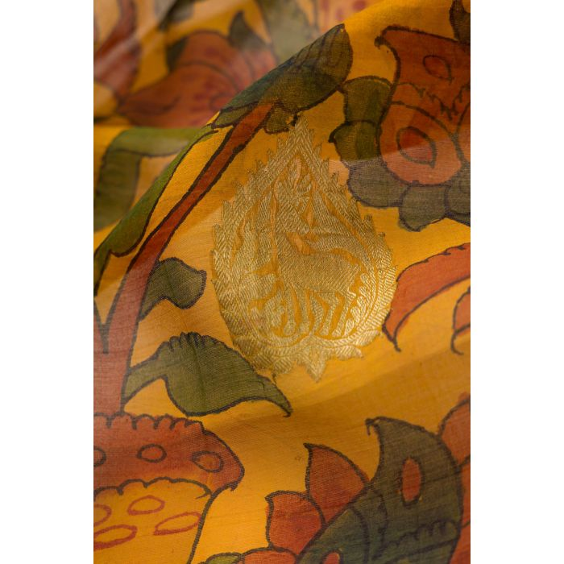

Couleurs
11 couleurs des saris traditonelles pour créer une base pour la collection qui porte chacune des valuers, des symboles, des événements, ou pour des typologies de personnes.Archivage à travers le machine learning
 Messages typographiques
La typographie est là pour dénoner les problèmes de caste verbalement que l’on ferrait par fragment car le tissu est plié et enroulé autour de la femme pour que l’on voit à chaque fois des petit bout d’images qui ont des messages un peu placé stratégiquement partout autour du sari.
I have my rights to dignity education and justce like every human being, I am not untouchable. I am human, I am human I am a human being. Who are you to decide my identity and make this carcas a burden I have to hide and carry. We are joyfull people who aren’t just sad and don’0t just work in sewers. Equality only is a possibilty when we are merely at the same level. I am a survivor to this illegal caste based system. I am not a caricature. I am not stuck in this identity that has been imposed on me. Only education can save us, there is hope we can be free from this social code which marginalises us from others.Élements décoratifs
Les fleurs en 3D sont une représentation formelle des designs que l’on retrouve sur les saris brodés en 2D. C’est pour faire le lien avec la pratique de production traditionnelle.
L’aspect ou problématique de la caste est représenté par la fragmentation des images générés en machine learning. J’ai utlisé le machine learning pour garder une trace comme une archive des designs de saris qui sont poétiquement placés dans les nouvelles images générés, ce qui me permet de garder une trace de la tradition à travers les pixels partagés entre les images qui sont ensuite composés en pattern fragmentés.